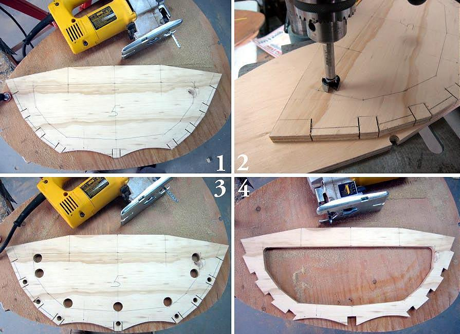

| Cross Sections - Baidarka | Menu Previous Page Next Page |
|

Using a jig saw to cut out the Nikumi cross sections. Each individual chine cutout has been drilled to allow access to the jigsaw blade for easier cutting along the chine base. (Optional)
|
|